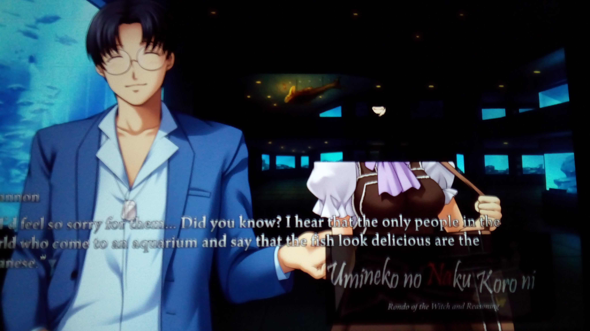

Palcto
2017-02-07 13:22:12
I recently downloaded the game, and it works fine on my laptop.
However when I transferred it to my windows tablet this weird glitch happens.
I've already updated my graphics drivers from device controller and have installed older versions of directx. I've also tried to run it on compatibility mode but nothing.
System Specs:
Model: Chuwi Hi8
Processor: Intel Atom Z3736F @ 1.33Ghz 2.16Ghz
RAM: 2GB
OS: 32 bit Windows 10 Home
However when I transferred it to my windows tablet this weird glitch happens.
I've already updated my graphics drivers from device controller and have installed older versions of directx. I've also tried to run it on compatibility mode but nothing.
System Specs:
Model: Chuwi Hi8
Processor: Intel Atom Z3736F @ 1.33Ghz 2.16Ghz
RAM: 2GB
OS: 32 bit Windows 10 Home
- Attachments
-
- 
- Sorry, I don't know how to take screenshots on a windows tablet.
- IMG_20170206_234953.jpg (1.77 MiB) Viewed 15024 times